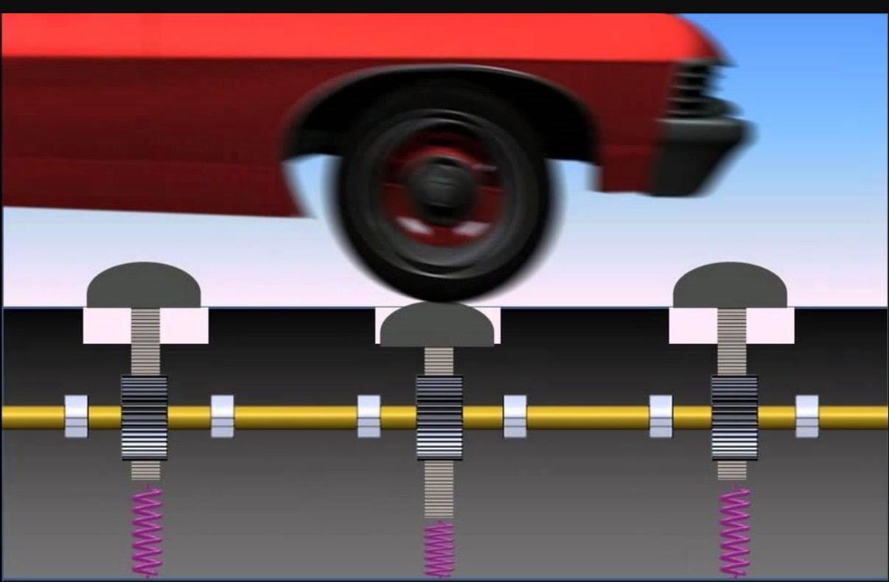

Introduction
Looking at the present condition, there is no doubt in saying that the modern society is completely dependent on electricity. Electricity has become an indispensable need for the development. It is also a prime essentiality to sustain modern urban life. We are so much dependent on electricity. Our life becomes still when the electricity supply shuts off however small the duration is. Electricity can be generated using different methods such as hydroelectric power generation, windmills, solar power etc.
Here we are using a technique of producing electricity using magnetic field.We are doing this based on faraday’s law which states that, when the magnetic flux linking the circuit changes, an electromotive force is induced in the circuit proportional to the rate of change of flux linkage. Here magnetic coil is placed below the surface of speed breaker on the ground.. A magnetic bar is attached to the below surface of the speed breaker. The speed breaker should be made up of elastic type material with suitable coefficient of elasticity. Whenever a vehicle moves over the speed breaker, it deforms and the magnetic bar attached to it moves inside the magnetic coil. Due to the movement of bar, magnetic flux is linked to the coil. The rate of change of magnetic flux generates electric current and this current is used to supply electricity for street lights and other small electric purposes in remote areas.
